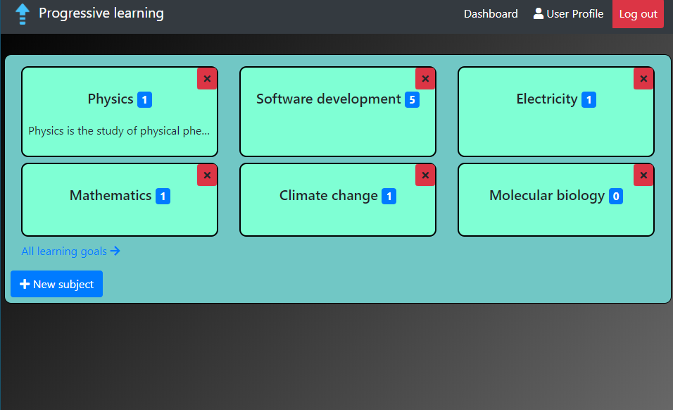

Projects
Progressive learning

Progressive learning is a general purpose knowledge management system. The main features of the app are:
- Enable users to create learning-goals and categorize them.
- Users can store, manage and refer to their resource link URL's in a central place instead of constantly looking them up.
The app is developed using the SEAN(Sequelize, Express, Angular, Node) stack and with MYSQL as the database. It consists of a server and front-end module which are run separately.
 |
Site
|
Site